data_path = '/home/naji/Desktop/github-repos/machine-learning/nbs/0-datasets/data/'Data Transforms
Scale Numerical Data
Numerical Data Scaling Methods
from pandas import read_csv, DataFrame
from numpy import asarray, mean, std
from sklearn.preprocessing import LabelEncoder, MinMaxScaler, StandardScaler
from sklearn.neighbors import KNeighborsClassifier
from sklearn.model_selection import RepeatedStratifiedKFold, cross_val_score, train_test_split
from sklearn.neighbors import KNeighborsClassifier
from sklearn.pipeline import Pipeline
from matplotlib import pyplotData Normalization
from sklearn.preprocessing import MinMaxScalerdata = asarray([[100, 0.001],
[8, 0.05],
[50, 0.005],
[88, 0.07],
[4, 0.1]])print(data)[[1.0e+02 1.0e-03]
[8.0e+00 5.0e-02]
[5.0e+01 5.0e-03]
[8.8e+01 7.0e-02]
[4.0e+00 1.0e-01]]scaler = MinMaxScaler()scaled = scaler.fit_transform(data)print(scaled)[[1. 0. ]
[0.04166667 0.49494949]
[0.47916667 0.04040404]
[0.875 0.6969697 ]
[0. 1. ]]Data Standardization
from sklearn.preprocessing import StandardScalerdata = asarray([[100, 0.001],
[8, 0.05],
[50, 0.005],
[88, 0.07],
[4, 0.1]])scaler = StandardScaler()scaled = scaler.fit_transform(data)print(scaled)[[ 1.26398112 -1.16389967]
[-1.06174414 0.12639634]
[ 0. -1.05856939]
[ 0.96062565 0.65304778]
[-1.16286263 1.44302493]]Diabetes Dataset
df = read_csv(data_path + 'pima-indians-diabetes.csv', header=None)
df| 0 | 1 | 2 | 3 | 4 | 5 | 6 | 7 | 8 | |
|---|---|---|---|---|---|---|---|---|---|
| 0 | 6 | 148 | 72 | 35 | 0 | 33.6 | 0.627 | 50 | 1 |
| 1 | 1 | 85 | 66 | 29 | 0 | 26.6 | 0.351 | 31 | 0 |
| 2 | 8 | 183 | 64 | 0 | 0 | 23.3 | 0.672 | 32 | 1 |
| 3 | 1 | 89 | 66 | 23 | 94 | 28.1 | 0.167 | 21 | 0 |
| 4 | 0 | 137 | 40 | 35 | 168 | 43.1 | 2.288 | 33 | 1 |
| ... | ... | ... | ... | ... | ... | ... | ... | ... | ... |
| 763 | 10 | 101 | 76 | 48 | 180 | 32.9 | 0.171 | 63 | 0 |
| 764 | 2 | 122 | 70 | 27 | 0 | 36.8 | 0.340 | 27 | 0 |
| 765 | 5 | 121 | 72 | 23 | 112 | 26.2 | 0.245 | 30 | 0 |
| 766 | 1 | 126 | 60 | 0 | 0 | 30.1 | 0.349 | 47 | 1 |
| 767 | 1 | 93 | 70 | 31 | 0 | 30.4 | 0.315 | 23 | 0 |
768 rows × 9 columns
df.shape(768, 9)print(df.describe()) 0 1 2 ... 6 7 8
count 768.000000 768.000000 768.000000 ... 768.000000 768.000000 768.000000
mean 3.845052 120.894531 69.105469 ... 0.471876 33.240885 0.348958
std 3.369578 31.972618 19.355807 ... 0.331329 11.760232 0.476951
min 0.000000 0.000000 0.000000 ... 0.078000 21.000000 0.000000
25% 1.000000 99.000000 62.000000 ... 0.243750 24.000000 0.000000
50% 3.000000 117.000000 72.000000 ... 0.372500 29.000000 0.000000
75% 6.000000 140.250000 80.000000 ... 0.626250 41.000000 1.000000
max 17.000000 199.000000 122.000000 ... 2.420000 81.000000 1.000000
[8 rows x 9 columns]fig = df.hist(xlabelsize=4, ylabelsize=4)
[x.title.set_size(4) for x in fig.ravel()]
pyplot.show()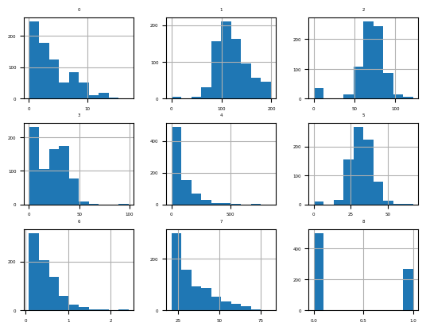
data = df.valuesX, y = data[:, :-1], data[:, -1]X = X.astype('float32')y = LabelEncoder().fit_transform(y.astype('str'))model = KNeighborsClassifier()cv = RepeatedStratifiedKFold(n_splits=10, n_repeats=3, random_state=1)scores = cross_val_score(model, X, y, scoring='accuracy', cv=cv)print(f'Accuracy: {mean(scores):0.3f} {std(scores):0.3f}')Accuracy: 0.717 0.040MinMaxScaler Transform
df = read_csv(data_path + 'pima-indians-diabetes.csv', header=None)data = df.valuestrans = MinMaxScaler()data = trans.fit_transform(data)df = DataFrame(data)print(df.describe()) 0 1 2 ... 6 7 8
count 768.000000 768.000000 768.000000 ... 768.000000 768.000000 768.000000
mean 0.226180 0.607510 0.566438 ... 0.168179 0.204015 0.348958
std 0.198210 0.160666 0.158654 ... 0.141473 0.196004 0.476951
min 0.000000 0.000000 0.000000 ... 0.000000 0.000000 0.000000
25% 0.058824 0.497487 0.508197 ... 0.070773 0.050000 0.000000
50% 0.176471 0.587940 0.590164 ... 0.125747 0.133333 0.000000
75% 0.352941 0.704774 0.655738 ... 0.234095 0.333333 1.000000
max 1.000000 1.000000 1.000000 ... 1.000000 1.000000 1.000000
[8 rows x 9 columns]fig = df.hist(xlabelsize=4, ylabelsize=4)
[x.title.set_size(4) for x in fig.ravel()]
pyplot.show()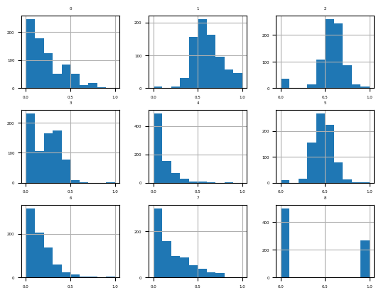
Train the model
df = read_csv(data_path + 'pima-indians-diabetes.csv', header=None)data = df.valuesX, y = data[:, :-1], data[:, -1]X = X.astype('float32')
y = LabelEncoder().fit_transform(y.astype('str'))trans = MinMaxScaler()model = KNeighborsClassifier()pipeline = Pipeline(steps=[('t', trans), ('m', model)])cv = RepeatedStratifiedKFold(n_splits=10, n_repeats=3, random_state=1)scores = cross_val_score(pipeline, X, y, scoring='accuracy', cv=cv)print(f'Accuracy: {mean(scores):0.3f}, {std(scores):.3f}')Accuracy: 0.739, 0.053StandardScaler Transform
df = read_csv(data_path + 'pima-indians-diabetes.csv', header=None)data = df.values[:, :-1]trans = StandardScaler()data = trans.fit_transform(data)df = DataFrame(data)print(df.describe()) 0 1 ... 6 7
count 7.680000e+02 7.680000e+02 ... 7.680000e+02 7.680000e+02
mean -6.476301e-17 -9.251859e-18 ... 2.451743e-16 1.931325e-16
std 1.000652e+00 1.000652e+00 ... 1.000652e+00 1.000652e+00
min -1.141852e+00 -3.783654e+00 ... -1.189553e+00 -1.041549e+00
25% -8.448851e-01 -6.852363e-01 ... -6.889685e-01 -7.862862e-01
50% -2.509521e-01 -1.218877e-01 ... -3.001282e-01 -3.608474e-01
75% 6.399473e-01 6.057709e-01 ... 4.662269e-01 6.602056e-01
max 3.906578e+00 2.444478e+00 ... 5.883565e+00 4.063716e+00
[8 rows x 8 columns]fig = df.hist(xlabelsize=4, ylabelsize=4)
[x.title.set_size(4) for x in fig.ravel()]
pyplot.show()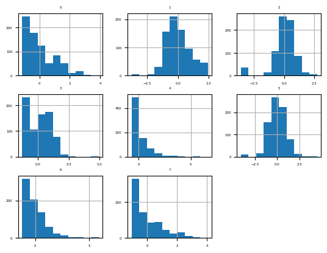
Train the model
df = read_csv(data_path + 'pima-indians-diabetes.csv', header=None)data = df.valuesX, y = data[:, :-1], data[:, -1]X = X.astype('float32')y = LabelEncoder().fit_transform(y.astype('str'))trans = StandardScaler()model = KNeighborsClassifier()pipeline = Pipeline(steps=[('t', trans), ('m', model)])cv = RepeatedStratifiedKFold(n_splits=10, n_repeats=3, random_state=1)scores = cross_val_score(pipeline, X, y, scoring='accuracy', cv=cv)print(f'Accuracy: {mean(scores):.3f} {std(scores):.3f}')Accuracy: 0.741 0.050Scale Data With Outliers
IQR Robust Scaler Transform
from sklearn.preprocessing import RobustScalerdf = read_csv(data_path + 'pima-indians-diabetes.csv', header=None)data = df.values[:, :-1]trans = RobustScaler()data = trans.fit_transform(data)df = DataFrame(data)print(df.describe()) 0 1 2 ... 5 6 7
count 768.000000 768.000000 768.000000 ... 768.000000 768.000000 768.000000
mean 0.169010 0.094413 -0.160807 ... -0.000798 0.259807 0.249464
std 0.673916 0.775094 1.075323 ... 0.847759 0.866219 0.691778
min -0.600000 -2.836364 -4.000000 ... -3.440860 -0.769935 -0.470588
25% -0.400000 -0.436364 -0.555556 ... -0.505376 -0.336601 -0.294118
50% 0.000000 0.000000 0.000000 ... 0.000000 0.000000 0.000000
75% 0.600000 0.563636 0.444444 ... 0.494624 0.663399 0.705882
max 2.800000 1.987879 2.777778 ... 3.774194 5.352941 3.058824
[8 rows x 8 columns]fig = df.hist(xlabelsize=4, ylabelsize=4)
[x.title.set_size(4) for x in fig.ravel()]
pyplot.show()Train the model
df = read_csv(data_path + 'pima-indians-diabetes.csv', header=None)data = df.valuesX, y = data[:, :-1], data[:, -1]X = X.astype('float32')y = LabelEncoder().fit_transform(y.astype('str'))trans = RobustScaler()model = KNeighborsClassifier()pipeline = Pipeline(steps=[('t', trans), ('m', model)])cv = RepeatedStratifiedKFold(n_splits=10, n_repeats=3, random_state=1)scores = cross_val_score(pipeline, X, y, scoring='accuracy', cv=cv)print(f'Accuracy: {mean(scores):.3f} {std(scores):.3f}')Accuracy: 0.734 0.044Explore Robust Scaler Range
def get_dataset():
df = read_csv(data_path + 'pima-indians-diabetes.csv', header=None)
data = df.values
X, y = data[:, :-1], data[:, -1]
X = X.astype('float32')
y = LabelEncoder().fit_transform(y.astype('str'))
return X, ydef get_models():
models = dict()
for value in [1, 5, 10, 20, 25, 30]:
trans = RobustScaler(quantile_range=(value, 100-value))
model = KNeighborsClassifier()
models[str(value)] = Pipeline(steps=[('t', trans), ('m', model)])
return modelsdef evaluate_model(model, X, y):
cv = RepeatedStratifiedKFold(n_splits=10, n_repeats=3, random_state=1)
scores = cross_val_score(model, X, y, scoring='accuracy', cv=cv)
return scoresx, y = get_dataset()models = get_models()results, names = list(), list()for name, model in models.items():
scores = evaluate_model(model, X, y)
results.append(scores)
names.append(name)
print(f'{name:} {mean(scores):.3f} {std(scores):.3f}')1 0.734 0.054
5 0.736 0.051
10 0.739 0.047
20 0.734 0.050
25 0.734 0.044
30 0.735 0.042pyplot.boxplot(results, labels=names, showmeans=True)
pyplot.show()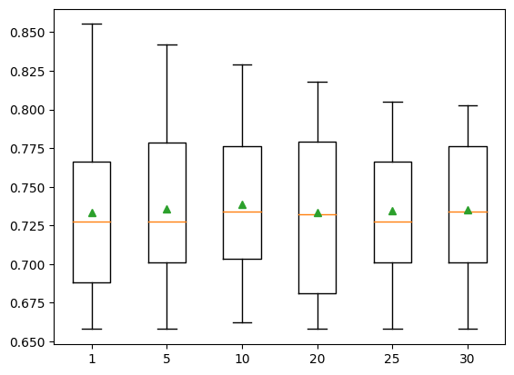
Encode Categorical Data
Encoding Categorical Data
Ordinal Encoding
from sklearn.preprocessing import OrdinalEncoderdata = asarray([['red'], ['green'], ['blue']])print(data)[['red']
['green']
['blue']]encoder = OrdinalEncoder()result = encoder.fit_transform(data)print(result)[[2.]
[1.]
[0.]]One Hot Encoding
from sklearn.preprocessing import OneHotEncoderdata = asarray([['red'], ['green'], ['blue']])print(data)[['red']
['green']
['blue']]encoder = OneHotEncoder(sparse=False)onehot = encoder.fit_transform(data)print(onehot)[[0. 0. 1.]
[0. 1. 0.]
[1. 0. 0.]]Dummy Variable Encoding
from sklearn.preprocessing import OneHotEncoderdata = asarray([['red'],['green'],['blue']])
print(data)[['red']
['green']
['blue']]encoder = OneHotEncoder(drop='first', sparse=False)onehot = encoder.fit_transform(data)
print(onehot)[[0. 1.]
[1. 0.]
[0. 0.]]Breast Cancer Dataset
df = read_csv(data_path + 'breast-cancer.csv', header=None)
df| 0 | 1 | 2 | 3 | 4 | 5 | 6 | 7 | 8 | 9 | |
|---|---|---|---|---|---|---|---|---|---|---|
| 0 | '40-49' | 'premeno' | '15-19' | '0-2' | 'yes' | '3' | 'right' | 'left_up' | 'no' | 'recurrence-events' |
| 1 | '50-59' | 'ge40' | '15-19' | '0-2' | 'no' | '1' | 'right' | 'central' | 'no' | 'no-recurrence-events' |
| 2 | '50-59' | 'ge40' | '35-39' | '0-2' | 'no' | '2' | 'left' | 'left_low' | 'no' | 'recurrence-events' |
| 3 | '40-49' | 'premeno' | '35-39' | '0-2' | 'yes' | '3' | 'right' | 'left_low' | 'yes' | 'no-recurrence-events' |
| 4 | '40-49' | 'premeno' | '30-34' | '3-5' | 'yes' | '2' | 'left' | 'right_up' | 'no' | 'recurrence-events' |
| ... | ... | ... | ... | ... | ... | ... | ... | ... | ... | ... |
| 281 | '50-59' | 'ge40' | '30-34' | '6-8' | 'yes' | '2' | 'left' | 'left_low' | 'no' | 'no-recurrence-events' |
| 282 | '50-59' | 'premeno' | '25-29' | '3-5' | 'yes' | '2' | 'left' | 'left_low' | 'yes' | 'no-recurrence-events' |
| 283 | '30-39' | 'premeno' | '30-34' | '6-8' | 'yes' | '2' | 'right' | 'right_up' | 'no' | 'no-recurrence-events' |
| 284 | '50-59' | 'premeno' | '15-19' | '0-2' | 'no' | '2' | 'right' | 'left_low' | 'no' | 'no-recurrence-events' |
| 285 | '50-59' | 'ge40' | '40-44' | '0-2' | 'no' | '3' | 'left' | 'right_up' | 'no' | 'no-recurrence-events' |
286 rows × 10 columns
data = df.valuesX = data[:, :-1].astype(str)
y = data[:, -1].astype(str)print('Input', X.shape)Input (286, 9)print('Output', y.shape)Output (286,)OrdinalEncoder Transform
ordinal_encoder = OrdinalEncoder()X = ordinal_encoder.fit_transform(X)label_encoder = LabelEncoder()y = label_encoder.fit_transform(y)print('Input', X.shape)Input (286, 9)X[:10, :]array([[2., 2., 2., 0., 1., 2., 1., 2., 0.],
[3., 0., 2., 0., 0., 0., 1., 0., 0.],
[3., 0., 6., 0., 0., 1., 0., 1., 0.],
[2., 2., 6., 0., 1., 2., 1., 1., 1.],
[2., 2., 5., 4., 1., 1., 0., 4., 0.],
[3., 2., 4., 4., 0., 1., 1., 2., 1.],
[3., 0., 7., 0., 0., 2., 0., 2., 0.],
[2., 2., 1., 0., 0., 1., 0., 2., 0.],
[2., 2., 0., 0., 0., 1., 1., 3., 0.],
[2., 0., 7., 2., 1., 1., 1., 2., 1.]])print('Output', y.shape)Output (286,)y[:10]array([1, 0, 1, 0, 1, 0, 0, 0, 0, 0])Training a model
from sklearn.linear_model import LogisticRegression
from sklearn.metrics import accuracy_scoredf = read_csv(data_path + 'breast-cancer.csv', header=None)data = df.valuesX = data[:, :-1].astype(str)
y = data[:, -1].astype(str)X_train, X_test, y_train, y_test = train_test_split(X, y, test_size=.33, random_state=1)ordinal_encoder = OrdinalEncoder()ordinal_encoder.fit(X_train)OrdinalEncoder()In a Jupyter environment, please rerun this cell to show the HTML representation or trust the notebook.
On GitHub, the HTML representation is unable to render, please try loading this page with nbviewer.org.
OrdinalEncoder()
X_train = ordinal_encoder.transform(X_train)
X_test = ordinal_encoder.transform(X_test)label_encoder = LabelEncoder()label_encoder.fit(y_train)LabelEncoder()In a Jupyter environment, please rerun this cell to show the HTML representation or trust the notebook.
On GitHub, the HTML representation is unable to render, please try loading this page with nbviewer.org.
LabelEncoder()
y_train = label_encoder.transform(y_train)y_test = label_encoder.transform(y_test)model = LogisticRegression()model.fit(X_train, y_train)LogisticRegression()In a Jupyter environment, please rerun this cell to show the HTML representation or trust the notebook.
On GitHub, the HTML representation is unable to render, please try loading this page with nbviewer.org.
LogisticRegression()
yhat = model.predict(X_test)accuracy = accuracy_score(y_test, yhat)print(f'Accuracy: {accuracy*100: .3f}')Accuracy: 75.789OneHotEncoder Transform
df = read_csv(data_path + 'breast-cancer.csv', header=None)data = df.valuesX = data[:, :-1].astype(str)
y = data[:, -1].astype(str)onehot_encoder = OneHotEncoder(sparse=False)X = onehot_encoder.fit_transform(X)label_encoder = LabelEncoder()y = label_encoder.fit_transform(y)print('Input', X.shape)Input (286, 43)print(X[:5, :])[[0. 0. 1. 0. 0. 0. 0. 0. 1. 0. 0. 1. 0. 0. 0. 0. 0. 0. 0. 0. 1. 0. 0. 0.
0. 0. 0. 0. 1. 0. 0. 0. 1. 0. 1. 0. 0. 1. 0. 0. 0. 1. 0.]
[0. 0. 0. 1. 0. 0. 1. 0. 0. 0. 0. 1. 0. 0. 0. 0. 0. 0. 0. 0. 1. 0. 0. 0.
0. 0. 0. 1. 0. 0. 1. 0. 0. 0. 1. 1. 0. 0. 0. 0. 0. 1. 0.]
[0. 0. 0. 1. 0. 0. 1. 0. 0. 0. 0. 0. 0. 0. 0. 1. 0. 0. 0. 0. 1. 0. 0. 0.
0. 0. 0. 1. 0. 0. 0. 1. 0. 1. 0. 0. 1. 0. 0. 0. 0. 1. 0.]
[0. 0. 1. 0. 0. 0. 0. 0. 1. 0. 0. 0. 0. 0. 0. 1. 0. 0. 0. 0. 1. 0. 0. 0.
0. 0. 0. 0. 1. 0. 0. 0. 1. 0. 1. 0. 1. 0. 0. 0. 0. 0. 1.]
[0. 0. 1. 0. 0. 0. 0. 0. 1. 0. 0. 0. 0. 0. 1. 0. 0. 0. 0. 0. 0. 0. 0. 0.
1. 0. 0. 0. 1. 0. 0. 1. 0. 1. 0. 0. 0. 0. 0. 1. 0. 1. 0.]]Train the model
df = read_csv(data_path + 'breast-cancer.csv', header=None)data = df.valuesX = data[:, :-1].astype(str)
y = data[:, -1].astype(str)X_train, X_test, y_train, y_test = train_test_split(X, y, test_size=0.33, random_state=1)onehot_encoder = OneHotEncoder()onehot_encoder.fit(X_train)OneHotEncoder()In a Jupyter environment, please rerun this cell to show the HTML representation or trust the notebook.
On GitHub, the HTML representation is unable to render, please try loading this page with nbviewer.org.
OneHotEncoder()
X_train = onehot_encoder.transform(X_train)
X_test = onehot_encoder.transform(X_test)label_encoder = LabelEncoder()label_encoder.fit(y_train)LabelEncoder()In a Jupyter environment, please rerun this cell to show the HTML representation or trust the notebook.
On GitHub, the HTML representation is unable to render, please try loading this page with nbviewer.org.
LabelEncoder()
y_train = label_encoder.transform(y_train)y_test = label_encoder.transform(y_test)model = LogisticRegression()model.fit(X_train, y_train)LogisticRegression()In a Jupyter environment, please rerun this cell to show the HTML representation or trust the notebook.
On GitHub, the HTML representation is unable to render, please try loading this page with nbviewer.org.
LogisticRegression()
yhat = model.predict(X_test)accuracy = accuracy_score(y_test, yhat)print(f'Accuracy: {accuracy*100: .3f}')Accuracy: 70.526How to Make Distributions More Gaussian
Power Transforms
from numpy import exp
from numpy.random import randn
from sklearn.preprocessing import PowerTransformerdata = randn(1000)data = exp(data)pyplot.hist(data, bins=25)
pyplot.show()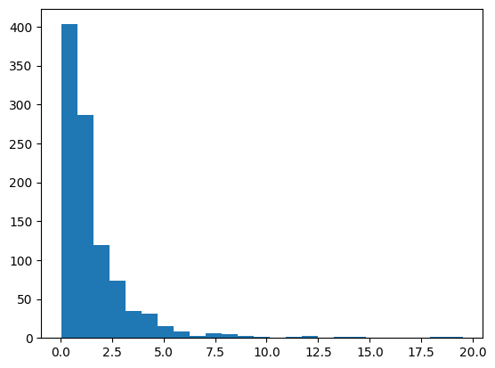
data = data.reshape(len(data), 1)power = PowerTransformer(method='yeo-johnson', standardize=True)data_trans = power.fit_transform(data)pyplot.hist(data_trans, bins=25)
pyplot.show()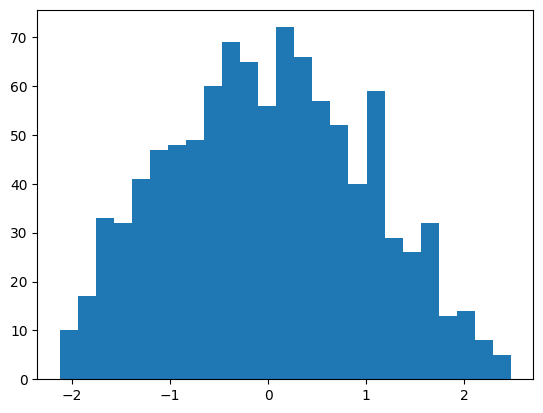
Sonar Dataset
from sklearn.preprocessing import LabelEncoderdf = read_csv(data_path + 'sonar.csv', header=None)df| 0 | 1 | 2 | 3 | 4 | 5 | 6 | 7 | 8 | 9 | 10 | 11 | 12 | 13 | 14 | 15 | 16 | 17 | 18 | 19 | 20 | 21 | 22 | 23 | 24 | 25 | 26 | 27 | 28 | 29 | 30 | 31 | 32 | 33 | 34 | 35 | 36 | 37 | 38 | 39 | 40 | 41 | 42 | 43 | 44 | 45 | 46 | 47 | 48 | 49 | 50 | 51 | 52 | 53 | 54 | 55 | 56 | 57 | 58 | 59 | 60 | |
|---|---|---|---|---|---|---|---|---|---|---|---|---|---|---|---|---|---|---|---|---|---|---|---|---|---|---|---|---|---|---|---|---|---|---|---|---|---|---|---|---|---|---|---|---|---|---|---|---|---|---|---|---|---|---|---|---|---|---|---|---|---|
| 0 | 0.0200 | 0.0371 | 0.0428 | 0.0207 | 0.0954 | 0.0986 | 0.1539 | 0.1601 | 0.3109 | 0.2111 | 0.1609 | 0.1582 | 0.2238 | 0.0645 | 0.0660 | 0.2273 | 0.3100 | 0.2999 | 0.5078 | 0.4797 | 0.5783 | 0.5071 | 0.4328 | 0.5550 | 0.6711 | 0.6415 | 0.7104 | 0.8080 | 0.6791 | 0.3857 | 0.1307 | 0.2604 | 0.5121 | 0.7547 | 0.8537 | 0.8507 | 0.6692 | 0.6097 | 0.4943 | 0.2744 | 0.0510 | 0.2834 | 0.2825 | 0.4256 | 0.2641 | 0.1386 | 0.1051 | 0.1343 | 0.0383 | 0.0324 | 0.0232 | 0.0027 | 0.0065 | 0.0159 | 0.0072 | 0.0167 | 0.0180 | 0.0084 | 0.0090 | 0.0032 | R |
| 1 | 0.0453 | 0.0523 | 0.0843 | 0.0689 | 0.1183 | 0.2583 | 0.2156 | 0.3481 | 0.3337 | 0.2872 | 0.4918 | 0.6552 | 0.6919 | 0.7797 | 0.7464 | 0.9444 | 1.0000 | 0.8874 | 0.8024 | 0.7818 | 0.5212 | 0.4052 | 0.3957 | 0.3914 | 0.3250 | 0.3200 | 0.3271 | 0.2767 | 0.4423 | 0.2028 | 0.3788 | 0.2947 | 0.1984 | 0.2341 | 0.1306 | 0.4182 | 0.3835 | 0.1057 | 0.1840 | 0.1970 | 0.1674 | 0.0583 | 0.1401 | 0.1628 | 0.0621 | 0.0203 | 0.0530 | 0.0742 | 0.0409 | 0.0061 | 0.0125 | 0.0084 | 0.0089 | 0.0048 | 0.0094 | 0.0191 | 0.0140 | 0.0049 | 0.0052 | 0.0044 | R |
| 2 | 0.0262 | 0.0582 | 0.1099 | 0.1083 | 0.0974 | 0.2280 | 0.2431 | 0.3771 | 0.5598 | 0.6194 | 0.6333 | 0.7060 | 0.5544 | 0.5320 | 0.6479 | 0.6931 | 0.6759 | 0.7551 | 0.8929 | 0.8619 | 0.7974 | 0.6737 | 0.4293 | 0.3648 | 0.5331 | 0.2413 | 0.5070 | 0.8533 | 0.6036 | 0.8514 | 0.8512 | 0.5045 | 0.1862 | 0.2709 | 0.4232 | 0.3043 | 0.6116 | 0.6756 | 0.5375 | 0.4719 | 0.4647 | 0.2587 | 0.2129 | 0.2222 | 0.2111 | 0.0176 | 0.1348 | 0.0744 | 0.0130 | 0.0106 | 0.0033 | 0.0232 | 0.0166 | 0.0095 | 0.0180 | 0.0244 | 0.0316 | 0.0164 | 0.0095 | 0.0078 | R |
| 3 | 0.0100 | 0.0171 | 0.0623 | 0.0205 | 0.0205 | 0.0368 | 0.1098 | 0.1276 | 0.0598 | 0.1264 | 0.0881 | 0.1992 | 0.0184 | 0.2261 | 0.1729 | 0.2131 | 0.0693 | 0.2281 | 0.4060 | 0.3973 | 0.2741 | 0.3690 | 0.5556 | 0.4846 | 0.3140 | 0.5334 | 0.5256 | 0.2520 | 0.2090 | 0.3559 | 0.6260 | 0.7340 | 0.6120 | 0.3497 | 0.3953 | 0.3012 | 0.5408 | 0.8814 | 0.9857 | 0.9167 | 0.6121 | 0.5006 | 0.3210 | 0.3202 | 0.4295 | 0.3654 | 0.2655 | 0.1576 | 0.0681 | 0.0294 | 0.0241 | 0.0121 | 0.0036 | 0.0150 | 0.0085 | 0.0073 | 0.0050 | 0.0044 | 0.0040 | 0.0117 | R |
| 4 | 0.0762 | 0.0666 | 0.0481 | 0.0394 | 0.0590 | 0.0649 | 0.1209 | 0.2467 | 0.3564 | 0.4459 | 0.4152 | 0.3952 | 0.4256 | 0.4135 | 0.4528 | 0.5326 | 0.7306 | 0.6193 | 0.2032 | 0.4636 | 0.4148 | 0.4292 | 0.5730 | 0.5399 | 0.3161 | 0.2285 | 0.6995 | 1.0000 | 0.7262 | 0.4724 | 0.5103 | 0.5459 | 0.2881 | 0.0981 | 0.1951 | 0.4181 | 0.4604 | 0.3217 | 0.2828 | 0.2430 | 0.1979 | 0.2444 | 0.1847 | 0.0841 | 0.0692 | 0.0528 | 0.0357 | 0.0085 | 0.0230 | 0.0046 | 0.0156 | 0.0031 | 0.0054 | 0.0105 | 0.0110 | 0.0015 | 0.0072 | 0.0048 | 0.0107 | 0.0094 | R |
| ... | ... | ... | ... | ... | ... | ... | ... | ... | ... | ... | ... | ... | ... | ... | ... | ... | ... | ... | ... | ... | ... | ... | ... | ... | ... | ... | ... | ... | ... | ... | ... | ... | ... | ... | ... | ... | ... | ... | ... | ... | ... | ... | ... | ... | ... | ... | ... | ... | ... | ... | ... | ... | ... | ... | ... | ... | ... | ... | ... | ... | ... |
| 203 | 0.0187 | 0.0346 | 0.0168 | 0.0177 | 0.0393 | 0.1630 | 0.2028 | 0.1694 | 0.2328 | 0.2684 | 0.3108 | 0.2933 | 0.2275 | 0.0994 | 0.1801 | 0.2200 | 0.2732 | 0.2862 | 0.2034 | 0.1740 | 0.4130 | 0.6879 | 0.8120 | 0.8453 | 0.8919 | 0.9300 | 0.9987 | 1.0000 | 0.8104 | 0.6199 | 0.6041 | 0.5547 | 0.4160 | 0.1472 | 0.0849 | 0.0608 | 0.0969 | 0.1411 | 0.1676 | 0.1200 | 0.1201 | 0.1036 | 0.1977 | 0.1339 | 0.0902 | 0.1085 | 0.1521 | 0.1363 | 0.0858 | 0.0290 | 0.0203 | 0.0116 | 0.0098 | 0.0199 | 0.0033 | 0.0101 | 0.0065 | 0.0115 | 0.0193 | 0.0157 | M |
| 204 | 0.0323 | 0.0101 | 0.0298 | 0.0564 | 0.0760 | 0.0958 | 0.0990 | 0.1018 | 0.1030 | 0.2154 | 0.3085 | 0.3425 | 0.2990 | 0.1402 | 0.1235 | 0.1534 | 0.1901 | 0.2429 | 0.2120 | 0.2395 | 0.3272 | 0.5949 | 0.8302 | 0.9045 | 0.9888 | 0.9912 | 0.9448 | 1.0000 | 0.9092 | 0.7412 | 0.7691 | 0.7117 | 0.5304 | 0.2131 | 0.0928 | 0.1297 | 0.1159 | 0.1226 | 0.1768 | 0.0345 | 0.1562 | 0.0824 | 0.1149 | 0.1694 | 0.0954 | 0.0080 | 0.0790 | 0.1255 | 0.0647 | 0.0179 | 0.0051 | 0.0061 | 0.0093 | 0.0135 | 0.0063 | 0.0063 | 0.0034 | 0.0032 | 0.0062 | 0.0067 | M |
| 205 | 0.0522 | 0.0437 | 0.0180 | 0.0292 | 0.0351 | 0.1171 | 0.1257 | 0.1178 | 0.1258 | 0.2529 | 0.2716 | 0.2374 | 0.1878 | 0.0983 | 0.0683 | 0.1503 | 0.1723 | 0.2339 | 0.1962 | 0.1395 | 0.3164 | 0.5888 | 0.7631 | 0.8473 | 0.9424 | 0.9986 | 0.9699 | 1.0000 | 0.8630 | 0.6979 | 0.7717 | 0.7305 | 0.5197 | 0.1786 | 0.1098 | 0.1446 | 0.1066 | 0.1440 | 0.1929 | 0.0325 | 0.1490 | 0.0328 | 0.0537 | 0.1309 | 0.0910 | 0.0757 | 0.1059 | 0.1005 | 0.0535 | 0.0235 | 0.0155 | 0.0160 | 0.0029 | 0.0051 | 0.0062 | 0.0089 | 0.0140 | 0.0138 | 0.0077 | 0.0031 | M |
| 206 | 0.0303 | 0.0353 | 0.0490 | 0.0608 | 0.0167 | 0.1354 | 0.1465 | 0.1123 | 0.1945 | 0.2354 | 0.2898 | 0.2812 | 0.1578 | 0.0273 | 0.0673 | 0.1444 | 0.2070 | 0.2645 | 0.2828 | 0.4293 | 0.5685 | 0.6990 | 0.7246 | 0.7622 | 0.9242 | 1.0000 | 0.9979 | 0.8297 | 0.7032 | 0.7141 | 0.6893 | 0.4961 | 0.2584 | 0.0969 | 0.0776 | 0.0364 | 0.1572 | 0.1823 | 0.1349 | 0.0849 | 0.0492 | 0.1367 | 0.1552 | 0.1548 | 0.1319 | 0.0985 | 0.1258 | 0.0954 | 0.0489 | 0.0241 | 0.0042 | 0.0086 | 0.0046 | 0.0126 | 0.0036 | 0.0035 | 0.0034 | 0.0079 | 0.0036 | 0.0048 | M |
| 207 | 0.0260 | 0.0363 | 0.0136 | 0.0272 | 0.0214 | 0.0338 | 0.0655 | 0.1400 | 0.1843 | 0.2354 | 0.2720 | 0.2442 | 0.1665 | 0.0336 | 0.1302 | 0.1708 | 0.2177 | 0.3175 | 0.3714 | 0.4552 | 0.5700 | 0.7397 | 0.8062 | 0.8837 | 0.9432 | 1.0000 | 0.9375 | 0.7603 | 0.7123 | 0.8358 | 0.7622 | 0.4567 | 0.1715 | 0.1549 | 0.1641 | 0.1869 | 0.2655 | 0.1713 | 0.0959 | 0.0768 | 0.0847 | 0.2076 | 0.2505 | 0.1862 | 0.1439 | 0.1470 | 0.0991 | 0.0041 | 0.0154 | 0.0116 | 0.0181 | 0.0146 | 0.0129 | 0.0047 | 0.0039 | 0.0061 | 0.0040 | 0.0036 | 0.0061 | 0.0115 | M |
208 rows × 61 columns
df.shape(208, 61)df.describe()| 0 | 1 | 2 | 3 | 4 | 5 | 6 | 7 | 8 | 9 | 10 | 11 | 12 | 13 | 14 | 15 | 16 | 17 | 18 | 19 | 20 | 21 | 22 | 23 | 24 | 25 | 26 | 27 | 28 | 29 | 30 | 31 | 32 | 33 | 34 | 35 | 36 | 37 | 38 | 39 | 40 | 41 | 42 | 43 | 44 | 45 | 46 | 47 | 48 | 49 | 50 | 51 | 52 | 53 | 54 | 55 | 56 | 57 | 58 | 59 | |
|---|---|---|---|---|---|---|---|---|---|---|---|---|---|---|---|---|---|---|---|---|---|---|---|---|---|---|---|---|---|---|---|---|---|---|---|---|---|---|---|---|---|---|---|---|---|---|---|---|---|---|---|---|---|---|---|---|---|---|---|---|
| count | 208.000000 | 208.000000 | 208.000000 | 208.000000 | 208.000000 | 208.000000 | 208.000000 | 208.000000 | 208.000000 | 208.000000 | 208.000000 | 208.000000 | 208.000000 | 208.000000 | 208.000000 | 208.000000 | 208.000000 | 208.000000 | 208.000000 | 208.000000 | 208.000000 | 208.000000 | 208.000000 | 208.000000 | 208.000000 | 208.000000 | 208.000000 | 208.000000 | 208.000000 | 208.000000 | 208.000000 | 208.000000 | 208.000000 | 208.000000 | 208.000000 | 208.000000 | 208.000000 | 208.000000 | 208.000000 | 208.000000 | 208.000000 | 208.000000 | 208.000000 | 208.000000 | 208.000000 | 208.000000 | 208.000000 | 208.000000 | 208.000000 | 208.000000 | 208.000000 | 208.000000 | 208.000000 | 208.000000 | 208.000000 | 208.000000 | 208.000000 | 208.000000 | 208.000000 | 208.000000 |
| mean | 0.029164 | 0.038437 | 0.043832 | 0.053892 | 0.075202 | 0.104570 | 0.121747 | 0.134799 | 0.178003 | 0.208259 | 0.236013 | 0.250221 | 0.273305 | 0.296568 | 0.320201 | 0.378487 | 0.415983 | 0.452318 | 0.504812 | 0.563047 | 0.609060 | 0.624275 | 0.646975 | 0.672654 | 0.675424 | 0.699866 | 0.702155 | 0.694024 | 0.642074 | 0.580928 | 0.504475 | 0.439040 | 0.417220 | 0.403233 | 0.392571 | 0.384848 | 0.363807 | 0.339657 | 0.325800 | 0.311207 | 0.289252 | 0.278293 | 0.246542 | 0.214075 | 0.197232 | 0.160631 | 0.122453 | 0.091424 | 0.051929 | 0.020424 | 0.016069 | 0.013420 | 0.010709 | 0.010941 | 0.009290 | 0.008222 | 0.007820 | 0.007949 | 0.007941 | 0.006507 |
| std | 0.022991 | 0.032960 | 0.038428 | 0.046528 | 0.055552 | 0.059105 | 0.061788 | 0.085152 | 0.118387 | 0.134416 | 0.132705 | 0.140072 | 0.140962 | 0.164474 | 0.205427 | 0.232650 | 0.263677 | 0.261529 | 0.257988 | 0.262653 | 0.257818 | 0.255883 | 0.250175 | 0.239116 | 0.244926 | 0.237228 | 0.245657 | 0.237189 | 0.240250 | 0.220749 | 0.213992 | 0.213237 | 0.206513 | 0.231242 | 0.259132 | 0.264121 | 0.239912 | 0.212973 | 0.199075 | 0.178662 | 0.171111 | 0.168728 | 0.138993 | 0.133291 | 0.151628 | 0.133938 | 0.086953 | 0.062417 | 0.035954 | 0.013665 | 0.012008 | 0.009634 | 0.007060 | 0.007301 | 0.007088 | 0.005736 | 0.005785 | 0.006470 | 0.006181 | 0.005031 |
| min | 0.001500 | 0.000600 | 0.001500 | 0.005800 | 0.006700 | 0.010200 | 0.003300 | 0.005500 | 0.007500 | 0.011300 | 0.028900 | 0.023600 | 0.018400 | 0.027300 | 0.003100 | 0.016200 | 0.034900 | 0.037500 | 0.049400 | 0.065600 | 0.051200 | 0.021900 | 0.056300 | 0.023900 | 0.024000 | 0.092100 | 0.048100 | 0.028400 | 0.014400 | 0.061300 | 0.048200 | 0.040400 | 0.047700 | 0.021200 | 0.022300 | 0.008000 | 0.035100 | 0.038300 | 0.037100 | 0.011700 | 0.036000 | 0.005600 | 0.000000 | 0.000000 | 0.000000 | 0.000000 | 0.000000 | 0.000000 | 0.000000 | 0.000000 | 0.000000 | 0.000800 | 0.000500 | 0.001000 | 0.000600 | 0.000400 | 0.000300 | 0.000300 | 0.000100 | 0.000600 |
| 25% | 0.013350 | 0.016450 | 0.018950 | 0.024375 | 0.038050 | 0.067025 | 0.080900 | 0.080425 | 0.097025 | 0.111275 | 0.129250 | 0.133475 | 0.166125 | 0.175175 | 0.164625 | 0.196300 | 0.205850 | 0.242075 | 0.299075 | 0.350625 | 0.399725 | 0.406925 | 0.450225 | 0.540725 | 0.525800 | 0.544175 | 0.531900 | 0.534775 | 0.463700 | 0.411400 | 0.345550 | 0.281400 | 0.257875 | 0.217575 | 0.179375 | 0.154350 | 0.160100 | 0.174275 | 0.173975 | 0.186450 | 0.163100 | 0.158900 | 0.155200 | 0.126875 | 0.094475 | 0.068550 | 0.064250 | 0.045125 | 0.026350 | 0.011550 | 0.008425 | 0.007275 | 0.005075 | 0.005375 | 0.004150 | 0.004400 | 0.003700 | 0.003600 | 0.003675 | 0.003100 |
| 50% | 0.022800 | 0.030800 | 0.034300 | 0.044050 | 0.062500 | 0.092150 | 0.106950 | 0.112100 | 0.152250 | 0.182400 | 0.224800 | 0.249050 | 0.263950 | 0.281100 | 0.281700 | 0.304700 | 0.308400 | 0.368300 | 0.434950 | 0.542500 | 0.617700 | 0.664900 | 0.699700 | 0.698500 | 0.721100 | 0.754500 | 0.745600 | 0.731900 | 0.680800 | 0.607150 | 0.490350 | 0.429600 | 0.391200 | 0.351050 | 0.312750 | 0.321150 | 0.306300 | 0.312700 | 0.283500 | 0.278050 | 0.259500 | 0.245100 | 0.222550 | 0.177700 | 0.148000 | 0.121350 | 0.101650 | 0.078100 | 0.044700 | 0.017900 | 0.013900 | 0.011400 | 0.009550 | 0.009300 | 0.007500 | 0.006850 | 0.005950 | 0.005800 | 0.006400 | 0.005300 |
| 75% | 0.035550 | 0.047950 | 0.057950 | 0.064500 | 0.100275 | 0.134125 | 0.154000 | 0.169600 | 0.233425 | 0.268700 | 0.301650 | 0.331250 | 0.351250 | 0.386175 | 0.452925 | 0.535725 | 0.659425 | 0.679050 | 0.731400 | 0.809325 | 0.816975 | 0.831975 | 0.848575 | 0.872175 | 0.873725 | 0.893800 | 0.917100 | 0.900275 | 0.852125 | 0.735175 | 0.641950 | 0.580300 | 0.556125 | 0.596125 | 0.593350 | 0.556525 | 0.518900 | 0.440550 | 0.434900 | 0.424350 | 0.387525 | 0.384250 | 0.324525 | 0.271750 | 0.231550 | 0.200375 | 0.154425 | 0.120100 | 0.068525 | 0.025275 | 0.020825 | 0.016725 | 0.014900 | 0.014500 | 0.012100 | 0.010575 | 0.010425 | 0.010350 | 0.010325 | 0.008525 |
| max | 0.137100 | 0.233900 | 0.305900 | 0.426400 | 0.401000 | 0.382300 | 0.372900 | 0.459000 | 0.682800 | 0.710600 | 0.734200 | 0.706000 | 0.713100 | 0.997000 | 1.000000 | 0.998800 | 1.000000 | 1.000000 | 1.000000 | 1.000000 | 1.000000 | 1.000000 | 1.000000 | 1.000000 | 1.000000 | 1.000000 | 1.000000 | 1.000000 | 1.000000 | 1.000000 | 0.965700 | 0.930600 | 1.000000 | 0.964700 | 1.000000 | 1.000000 | 0.949700 | 1.000000 | 0.985700 | 0.929700 | 0.899500 | 0.824600 | 0.773300 | 0.776200 | 0.703400 | 0.729200 | 0.552200 | 0.333900 | 0.198100 | 0.082500 | 0.100400 | 0.070900 | 0.039000 | 0.035200 | 0.044700 | 0.039400 | 0.035500 | 0.044000 | 0.036400 | 0.043900 |
fig = df.hist(xlabelsize=4, ylabelsize=4)
[x.title.set_size(4) for x in fig.ravel()]
pyplot.show()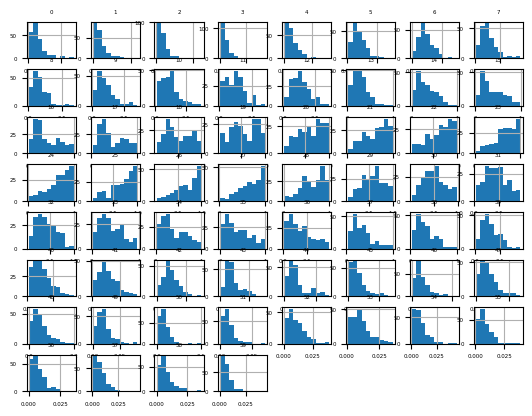
data = df.valuesX, y = data[:, :-1], data[:, -1]X = X.astype('float32')
y = LabelEncoder().fit_transform(y.astype('str'))model = KNeighborsClassifier()cv = RepeatedStratifiedKFold(n_splits=10, n_repeats=3, random_state=1)scores = cross_val_score(model, X, y, scoring='accuracy', cv=cv)print(f'Accuracy: {mean(scores):.3f} {std(scores):.3f}')Accuracy: 0.797 0.073Box-Cox Transform
df = read_csv(data_path + 'sonar.csv', header=None)
df| 0 | 1 | 2 | 3 | 4 | 5 | 6 | 7 | 8 | 9 | 10 | 11 | 12 | 13 | 14 | 15 | 16 | 17 | 18 | 19 | 20 | 21 | 22 | 23 | 24 | 25 | 26 | 27 | 28 | 29 | 30 | 31 | 32 | 33 | 34 | 35 | 36 | 37 | 38 | 39 | 40 | 41 | 42 | 43 | 44 | 45 | 46 | 47 | 48 | 49 | 50 | 51 | 52 | 53 | 54 | 55 | 56 | 57 | 58 | 59 | 60 | |
|---|---|---|---|---|---|---|---|---|---|---|---|---|---|---|---|---|---|---|---|---|---|---|---|---|---|---|---|---|---|---|---|---|---|---|---|---|---|---|---|---|---|---|---|---|---|---|---|---|---|---|---|---|---|---|---|---|---|---|---|---|---|
| 0 | 0.0200 | 0.0371 | 0.0428 | 0.0207 | 0.0954 | 0.0986 | 0.1539 | 0.1601 | 0.3109 | 0.2111 | 0.1609 | 0.1582 | 0.2238 | 0.0645 | 0.0660 | 0.2273 | 0.3100 | 0.2999 | 0.5078 | 0.4797 | 0.5783 | 0.5071 | 0.4328 | 0.5550 | 0.6711 | 0.6415 | 0.7104 | 0.8080 | 0.6791 | 0.3857 | 0.1307 | 0.2604 | 0.5121 | 0.7547 | 0.8537 | 0.8507 | 0.6692 | 0.6097 | 0.4943 | 0.2744 | 0.0510 | 0.2834 | 0.2825 | 0.4256 | 0.2641 | 0.1386 | 0.1051 | 0.1343 | 0.0383 | 0.0324 | 0.0232 | 0.0027 | 0.0065 | 0.0159 | 0.0072 | 0.0167 | 0.0180 | 0.0084 | 0.0090 | 0.0032 | R |
| 1 | 0.0453 | 0.0523 | 0.0843 | 0.0689 | 0.1183 | 0.2583 | 0.2156 | 0.3481 | 0.3337 | 0.2872 | 0.4918 | 0.6552 | 0.6919 | 0.7797 | 0.7464 | 0.9444 | 1.0000 | 0.8874 | 0.8024 | 0.7818 | 0.5212 | 0.4052 | 0.3957 | 0.3914 | 0.3250 | 0.3200 | 0.3271 | 0.2767 | 0.4423 | 0.2028 | 0.3788 | 0.2947 | 0.1984 | 0.2341 | 0.1306 | 0.4182 | 0.3835 | 0.1057 | 0.1840 | 0.1970 | 0.1674 | 0.0583 | 0.1401 | 0.1628 | 0.0621 | 0.0203 | 0.0530 | 0.0742 | 0.0409 | 0.0061 | 0.0125 | 0.0084 | 0.0089 | 0.0048 | 0.0094 | 0.0191 | 0.0140 | 0.0049 | 0.0052 | 0.0044 | R |
| 2 | 0.0262 | 0.0582 | 0.1099 | 0.1083 | 0.0974 | 0.2280 | 0.2431 | 0.3771 | 0.5598 | 0.6194 | 0.6333 | 0.7060 | 0.5544 | 0.5320 | 0.6479 | 0.6931 | 0.6759 | 0.7551 | 0.8929 | 0.8619 | 0.7974 | 0.6737 | 0.4293 | 0.3648 | 0.5331 | 0.2413 | 0.5070 | 0.8533 | 0.6036 | 0.8514 | 0.8512 | 0.5045 | 0.1862 | 0.2709 | 0.4232 | 0.3043 | 0.6116 | 0.6756 | 0.5375 | 0.4719 | 0.4647 | 0.2587 | 0.2129 | 0.2222 | 0.2111 | 0.0176 | 0.1348 | 0.0744 | 0.0130 | 0.0106 | 0.0033 | 0.0232 | 0.0166 | 0.0095 | 0.0180 | 0.0244 | 0.0316 | 0.0164 | 0.0095 | 0.0078 | R |
| 3 | 0.0100 | 0.0171 | 0.0623 | 0.0205 | 0.0205 | 0.0368 | 0.1098 | 0.1276 | 0.0598 | 0.1264 | 0.0881 | 0.1992 | 0.0184 | 0.2261 | 0.1729 | 0.2131 | 0.0693 | 0.2281 | 0.4060 | 0.3973 | 0.2741 | 0.3690 | 0.5556 | 0.4846 | 0.3140 | 0.5334 | 0.5256 | 0.2520 | 0.2090 | 0.3559 | 0.6260 | 0.7340 | 0.6120 | 0.3497 | 0.3953 | 0.3012 | 0.5408 | 0.8814 | 0.9857 | 0.9167 | 0.6121 | 0.5006 | 0.3210 | 0.3202 | 0.4295 | 0.3654 | 0.2655 | 0.1576 | 0.0681 | 0.0294 | 0.0241 | 0.0121 | 0.0036 | 0.0150 | 0.0085 | 0.0073 | 0.0050 | 0.0044 | 0.0040 | 0.0117 | R |
| 4 | 0.0762 | 0.0666 | 0.0481 | 0.0394 | 0.0590 | 0.0649 | 0.1209 | 0.2467 | 0.3564 | 0.4459 | 0.4152 | 0.3952 | 0.4256 | 0.4135 | 0.4528 | 0.5326 | 0.7306 | 0.6193 | 0.2032 | 0.4636 | 0.4148 | 0.4292 | 0.5730 | 0.5399 | 0.3161 | 0.2285 | 0.6995 | 1.0000 | 0.7262 | 0.4724 | 0.5103 | 0.5459 | 0.2881 | 0.0981 | 0.1951 | 0.4181 | 0.4604 | 0.3217 | 0.2828 | 0.2430 | 0.1979 | 0.2444 | 0.1847 | 0.0841 | 0.0692 | 0.0528 | 0.0357 | 0.0085 | 0.0230 | 0.0046 | 0.0156 | 0.0031 | 0.0054 | 0.0105 | 0.0110 | 0.0015 | 0.0072 | 0.0048 | 0.0107 | 0.0094 | R |
| ... | ... | ... | ... | ... | ... | ... | ... | ... | ... | ... | ... | ... | ... | ... | ... | ... | ... | ... | ... | ... | ... | ... | ... | ... | ... | ... | ... | ... | ... | ... | ... | ... | ... | ... | ... | ... | ... | ... | ... | ... | ... | ... | ... | ... | ... | ... | ... | ... | ... | ... | ... | ... | ... | ... | ... | ... | ... | ... | ... | ... | ... |
| 203 | 0.0187 | 0.0346 | 0.0168 | 0.0177 | 0.0393 | 0.1630 | 0.2028 | 0.1694 | 0.2328 | 0.2684 | 0.3108 | 0.2933 | 0.2275 | 0.0994 | 0.1801 | 0.2200 | 0.2732 | 0.2862 | 0.2034 | 0.1740 | 0.4130 | 0.6879 | 0.8120 | 0.8453 | 0.8919 | 0.9300 | 0.9987 | 1.0000 | 0.8104 | 0.6199 | 0.6041 | 0.5547 | 0.4160 | 0.1472 | 0.0849 | 0.0608 | 0.0969 | 0.1411 | 0.1676 | 0.1200 | 0.1201 | 0.1036 | 0.1977 | 0.1339 | 0.0902 | 0.1085 | 0.1521 | 0.1363 | 0.0858 | 0.0290 | 0.0203 | 0.0116 | 0.0098 | 0.0199 | 0.0033 | 0.0101 | 0.0065 | 0.0115 | 0.0193 | 0.0157 | M |
| 204 | 0.0323 | 0.0101 | 0.0298 | 0.0564 | 0.0760 | 0.0958 | 0.0990 | 0.1018 | 0.1030 | 0.2154 | 0.3085 | 0.3425 | 0.2990 | 0.1402 | 0.1235 | 0.1534 | 0.1901 | 0.2429 | 0.2120 | 0.2395 | 0.3272 | 0.5949 | 0.8302 | 0.9045 | 0.9888 | 0.9912 | 0.9448 | 1.0000 | 0.9092 | 0.7412 | 0.7691 | 0.7117 | 0.5304 | 0.2131 | 0.0928 | 0.1297 | 0.1159 | 0.1226 | 0.1768 | 0.0345 | 0.1562 | 0.0824 | 0.1149 | 0.1694 | 0.0954 | 0.0080 | 0.0790 | 0.1255 | 0.0647 | 0.0179 | 0.0051 | 0.0061 | 0.0093 | 0.0135 | 0.0063 | 0.0063 | 0.0034 | 0.0032 | 0.0062 | 0.0067 | M |
| 205 | 0.0522 | 0.0437 | 0.0180 | 0.0292 | 0.0351 | 0.1171 | 0.1257 | 0.1178 | 0.1258 | 0.2529 | 0.2716 | 0.2374 | 0.1878 | 0.0983 | 0.0683 | 0.1503 | 0.1723 | 0.2339 | 0.1962 | 0.1395 | 0.3164 | 0.5888 | 0.7631 | 0.8473 | 0.9424 | 0.9986 | 0.9699 | 1.0000 | 0.8630 | 0.6979 | 0.7717 | 0.7305 | 0.5197 | 0.1786 | 0.1098 | 0.1446 | 0.1066 | 0.1440 | 0.1929 | 0.0325 | 0.1490 | 0.0328 | 0.0537 | 0.1309 | 0.0910 | 0.0757 | 0.1059 | 0.1005 | 0.0535 | 0.0235 | 0.0155 | 0.0160 | 0.0029 | 0.0051 | 0.0062 | 0.0089 | 0.0140 | 0.0138 | 0.0077 | 0.0031 | M |
| 206 | 0.0303 | 0.0353 | 0.0490 | 0.0608 | 0.0167 | 0.1354 | 0.1465 | 0.1123 | 0.1945 | 0.2354 | 0.2898 | 0.2812 | 0.1578 | 0.0273 | 0.0673 | 0.1444 | 0.2070 | 0.2645 | 0.2828 | 0.4293 | 0.5685 | 0.6990 | 0.7246 | 0.7622 | 0.9242 | 1.0000 | 0.9979 | 0.8297 | 0.7032 | 0.7141 | 0.6893 | 0.4961 | 0.2584 | 0.0969 | 0.0776 | 0.0364 | 0.1572 | 0.1823 | 0.1349 | 0.0849 | 0.0492 | 0.1367 | 0.1552 | 0.1548 | 0.1319 | 0.0985 | 0.1258 | 0.0954 | 0.0489 | 0.0241 | 0.0042 | 0.0086 | 0.0046 | 0.0126 | 0.0036 | 0.0035 | 0.0034 | 0.0079 | 0.0036 | 0.0048 | M |
| 207 | 0.0260 | 0.0363 | 0.0136 | 0.0272 | 0.0214 | 0.0338 | 0.0655 | 0.1400 | 0.1843 | 0.2354 | 0.2720 | 0.2442 | 0.1665 | 0.0336 | 0.1302 | 0.1708 | 0.2177 | 0.3175 | 0.3714 | 0.4552 | 0.5700 | 0.7397 | 0.8062 | 0.8837 | 0.9432 | 1.0000 | 0.9375 | 0.7603 | 0.7123 | 0.8358 | 0.7622 | 0.4567 | 0.1715 | 0.1549 | 0.1641 | 0.1869 | 0.2655 | 0.1713 | 0.0959 | 0.0768 | 0.0847 | 0.2076 | 0.2505 | 0.1862 | 0.1439 | 0.1470 | 0.0991 | 0.0041 | 0.0154 | 0.0116 | 0.0181 | 0.0146 | 0.0129 | 0.0047 | 0.0039 | 0.0061 | 0.0040 | 0.0036 | 0.0061 | 0.0115 | M |
208 rows × 61 columns
data = df.values[:, :-1]pt = PowerTransformer(method='box-cox')data = pt.fit_transform(data)ValueError: The Box-Cox transformation can only be applied to strictly positive dataYeo-Johnson Transform
df = read_csv(data_path + 'sonar.csv', header=None)data = df.values[:, :-1]pt = PowerTransformer(method='yeo-johnson')data = pt.fit_transform(data)df = DataFrame(data)fig = df.hist(xlabelsize=4, ylabelsize=4)
[x.title.set_size(4) for x in fig.ravel()]
pyplot.show()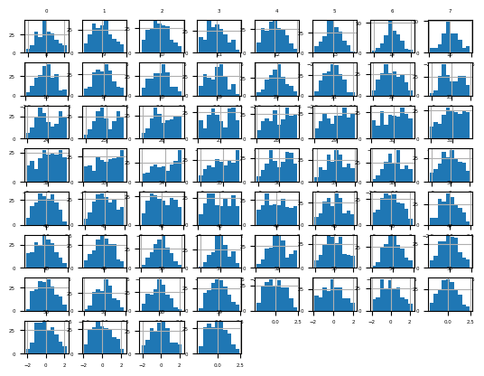
Train the model
df = read_csv(data_path + 'sonar.csv', header=None)data = df.valuesX, y = data[:, :-1], data[:, -1]X = X.astype('float32')
y = LabelEncoder().fit_transform(y.astype('str'))power = PowerTransformer(method='yeo-johnson')model = KNeighborsClassifier()pipeline = Pipeline(steps=[('p', power), ('m', model)])cv = RepeatedStratifiedKFold(n_splits=10, n_repeats=3, random_state=1)scores = cross_val_score(pipeline, X, y, scoring='accuracy', cv=cv)print(f'Accuracy: {mean(scores): .3f} {std(scores): .3f}')Accuracy: 0.808 0.082Sometimes a lift in performance can be achieved by first standardizing the raw dataset prior to performing a Yeo-Johnson transform. We can explore this by adding a StandardScaler as a first step in the pipeline. The complete example is listed below.
df = read_csv(data_path + 'sonar.csv', header=None)data = df.valuesX, y = data[:, :-1], data[:,-1]X = X.astype('float32')
y = LabelEncoder().fit_transform(y.astype('str'))scaler = StandardScaler()power = PowerTransformer(method='yeo-johnson')model = KNeighborsClassifier()pipeline = Pipeline(steps=[('s', scaler), ('p', power), ('m', model)])cv = RepeatedStratifiedKFold(n_splits=10, n_repeats=3, random_state=1)scores = cross_val_score(pipeline, X, y, scoring='accuracy', cv=cv)print(f'Accuracy: {mean(scores): .3f}, {std(scores): .3f}')Accuracy: 0.816, 0.077Change Numerical Data Distributions
Quantile Transforms
from sklearn.preprocessing import QuantileTransformerdata = randn(1000)data = exp(data)pyplot.hist(data, bins=25)
pyplot.show()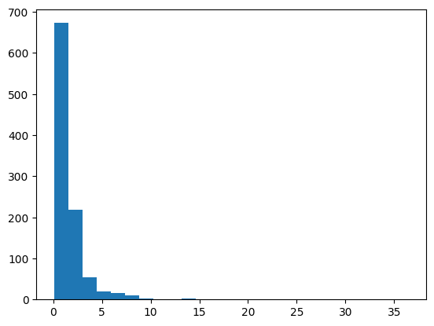
data = data.reshape(len(data), 1)quantile = QuantileTransformer(output_distribution='normal')data_trans = quantile.fit_transform(data)pyplot.hist(data_trans, bins=25)
pyplot.show()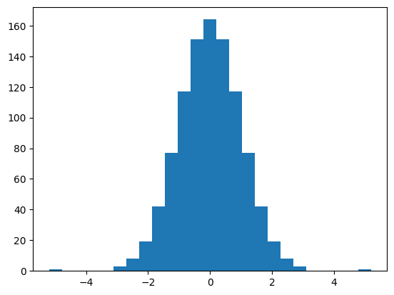
Sonar Dataset
df = read_csv(data_path + 'sonar.csv', header=None)data = df.values[:, :-1]trans = QuantileTransformer(n_quantiles=100, output_distribution='normal')data = trans.fit_transform(data)df = DataFrame(data)fig = df.hist(xlabelsize=4, ylabelsize=4)
[x.title.set_size(4) for x in fig.ravel()]
pyplot.show()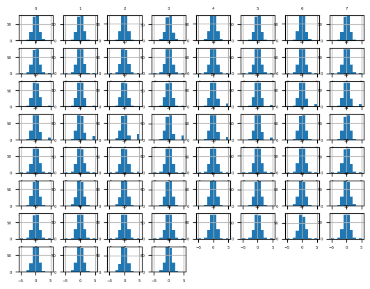
Next, let’s evaluate the same KNN model as the previous section, but in this case on a normal quantile transform of the dataset. The complete example is listed below.
df = read_csv(data_path + 'sonar.csv', header=None)data = df.valuesX, y = data[:, :-1], data[:, -1]X = X.astype('float32')y = LabelEncoder().fit_transform(y.astype('str'))trans = QuantileTransformer(n_quantiles=100, output_distribution='normal')model = KNeighborsClassifier()pipeline = Pipeline(steps=[('t', trans), ('m', model)])cv = RepeatedStratifiedKFold(n_splits=10, n_repeats=3, random_state=1)scores = cross_val_score(pipeline, X, y, scoring='accuracy', cv=cv)print(f'Accuracy: {mean(scores):.3f} {std(scores): .3f}')Accuracy: 0.817 0.087Uniform Quantile Transform
df = read_csv(data_path + 'sonar.csv', header=None)data = df.values[:, :-1]trans = QuantileTransformer(n_quantiles=100, output_distribution='uniform')data = trans.fit_transform(data)df = DataFrame(data)fig = df.hist(xlabelsize=4, ylabelsize=4)
[x.title.set_size(4) for x in fig.ravel()]
pyplot.show()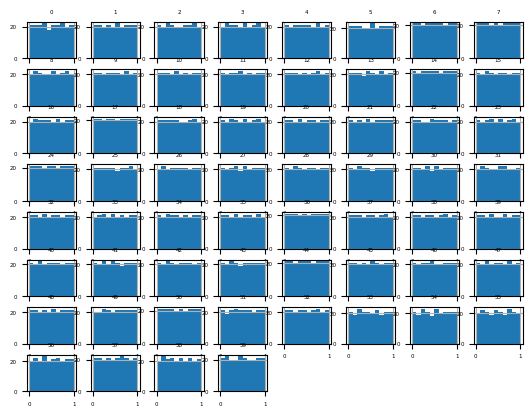
Next, let’s evaluate the same KNN model as the previous section, but in this case on a uniform quantile transform of the raw dataset.
df = read_csv(data_path + 'sonar.csv', header=None)data = df.valuesX, y = data[:, :-1], data[:, -1]X = X.astype('float32')y = LabelEncoder().fit_transform(y.astype('str'))trans = QuantileTransformer(n_quantiles=100, output_distribution='uniform')model = KNeighborsClassifier()pipeline = Pipeline(steps=[('t', trans), ('m', model)])cv = RepeatedStratifiedKFold(n_splits=10, n_repeats=3, random_state=1)scores = cross_val_score(pipeline, X, y, scoring='accuracy', cv=cv)print(f'Accuracy: {mean(scores):.3f} {std(scores):.3f}')Accuracy: 0.845 0.074ed to explore the effect of the resolution of the transform on the resulting skill of the model. The example below performs this experiment and plots the mean accuracy for different n quantiles values from 1 to 99.
Transform Numerical to Categorical Data
from numpy.random import randn
from sklearn.preprocessing import KBinsDiscretizer
from matplotlib import pyplotdata = randn(1000)pyplot.hist(data, bins=25)
pyplot.show()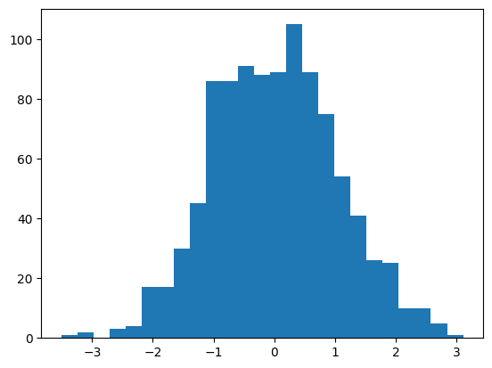
data = data.reshape(len(data), 1)kbins = KBinsDiscretizer(n_bins=10, encode='ordinal', strategy='uniform')data_trans = kbins.fit_transform(data)print(data_trans[:10, :])[[5.]
[6.]
[4.]
[5.]
[8.]
[6.]
[3.]
[7.]
[6.]
[4.]]pyplot.hist(data_trans, bins=10)
pyplot.show()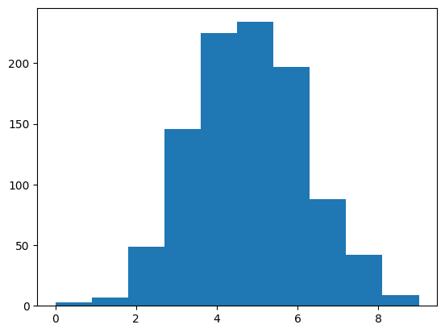
Sonar Dataset
from pandas import read_csv
from matplotlib import pyplotdf = read_csv(data_path + 'sonar.csv', header=None)print(df.shape)(208, 61)df.describe()| 0 | 1 | 2 | 3 | 4 | 5 | 6 | 7 | 8 | 9 | 10 | 11 | 12 | 13 | 14 | 15 | 16 | 17 | 18 | 19 | 20 | 21 | 22 | 23 | 24 | 25 | 26 | 27 | 28 | 29 | 30 | 31 | 32 | 33 | 34 | 35 | 36 | 37 | 38 | 39 | 40 | 41 | 42 | 43 | 44 | 45 | 46 | 47 | 48 | 49 | 50 | 51 | 52 | 53 | 54 | 55 | 56 | 57 | 58 | 59 | |
|---|---|---|---|---|---|---|---|---|---|---|---|---|---|---|---|---|---|---|---|---|---|---|---|---|---|---|---|---|---|---|---|---|---|---|---|---|---|---|---|---|---|---|---|---|---|---|---|---|---|---|---|---|---|---|---|---|---|---|---|---|
| count | 208.000000 | 208.000000 | 208.000000 | 208.000000 | 208.000000 | 208.000000 | 208.000000 | 208.000000 | 208.000000 | 208.000000 | 208.000000 | 208.000000 | 208.000000 | 208.000000 | 208.000000 | 208.000000 | 208.000000 | 208.000000 | 208.000000 | 208.000000 | 208.000000 | 208.000000 | 208.000000 | 208.000000 | 208.000000 | 208.000000 | 208.000000 | 208.000000 | 208.000000 | 208.000000 | 208.000000 | 208.000000 | 208.000000 | 208.000000 | 208.000000 | 208.000000 | 208.000000 | 208.000000 | 208.000000 | 208.000000 | 208.000000 | 208.000000 | 208.000000 | 208.000000 | 208.000000 | 208.000000 | 208.000000 | 208.000000 | 208.000000 | 208.000000 | 208.000000 | 208.000000 | 208.000000 | 208.000000 | 208.000000 | 208.000000 | 208.000000 | 208.000000 | 208.000000 | 208.000000 |
| mean | 0.029164 | 0.038437 | 0.043832 | 0.053892 | 0.075202 | 0.104570 | 0.121747 | 0.134799 | 0.178003 | 0.208259 | 0.236013 | 0.250221 | 0.273305 | 0.296568 | 0.320201 | 0.378487 | 0.415983 | 0.452318 | 0.504812 | 0.563047 | 0.609060 | 0.624275 | 0.646975 | 0.672654 | 0.675424 | 0.699866 | 0.702155 | 0.694024 | 0.642074 | 0.580928 | 0.504475 | 0.439040 | 0.417220 | 0.403233 | 0.392571 | 0.384848 | 0.363807 | 0.339657 | 0.325800 | 0.311207 | 0.289252 | 0.278293 | 0.246542 | 0.214075 | 0.197232 | 0.160631 | 0.122453 | 0.091424 | 0.051929 | 0.020424 | 0.016069 | 0.013420 | 0.010709 | 0.010941 | 0.009290 | 0.008222 | 0.007820 | 0.007949 | 0.007941 | 0.006507 |
| std | 0.022991 | 0.032960 | 0.038428 | 0.046528 | 0.055552 | 0.059105 | 0.061788 | 0.085152 | 0.118387 | 0.134416 | 0.132705 | 0.140072 | 0.140962 | 0.164474 | 0.205427 | 0.232650 | 0.263677 | 0.261529 | 0.257988 | 0.262653 | 0.257818 | 0.255883 | 0.250175 | 0.239116 | 0.244926 | 0.237228 | 0.245657 | 0.237189 | 0.240250 | 0.220749 | 0.213992 | 0.213237 | 0.206513 | 0.231242 | 0.259132 | 0.264121 | 0.239912 | 0.212973 | 0.199075 | 0.178662 | 0.171111 | 0.168728 | 0.138993 | 0.133291 | 0.151628 | 0.133938 | 0.086953 | 0.062417 | 0.035954 | 0.013665 | 0.012008 | 0.009634 | 0.007060 | 0.007301 | 0.007088 | 0.005736 | 0.005785 | 0.006470 | 0.006181 | 0.005031 |
| min | 0.001500 | 0.000600 | 0.001500 | 0.005800 | 0.006700 | 0.010200 | 0.003300 | 0.005500 | 0.007500 | 0.011300 | 0.028900 | 0.023600 | 0.018400 | 0.027300 | 0.003100 | 0.016200 | 0.034900 | 0.037500 | 0.049400 | 0.065600 | 0.051200 | 0.021900 | 0.056300 | 0.023900 | 0.024000 | 0.092100 | 0.048100 | 0.028400 | 0.014400 | 0.061300 | 0.048200 | 0.040400 | 0.047700 | 0.021200 | 0.022300 | 0.008000 | 0.035100 | 0.038300 | 0.037100 | 0.011700 | 0.036000 | 0.005600 | 0.000000 | 0.000000 | 0.000000 | 0.000000 | 0.000000 | 0.000000 | 0.000000 | 0.000000 | 0.000000 | 0.000800 | 0.000500 | 0.001000 | 0.000600 | 0.000400 | 0.000300 | 0.000300 | 0.000100 | 0.000600 |
| 25% | 0.013350 | 0.016450 | 0.018950 | 0.024375 | 0.038050 | 0.067025 | 0.080900 | 0.080425 | 0.097025 | 0.111275 | 0.129250 | 0.133475 | 0.166125 | 0.175175 | 0.164625 | 0.196300 | 0.205850 | 0.242075 | 0.299075 | 0.350625 | 0.399725 | 0.406925 | 0.450225 | 0.540725 | 0.525800 | 0.544175 | 0.531900 | 0.534775 | 0.463700 | 0.411400 | 0.345550 | 0.281400 | 0.257875 | 0.217575 | 0.179375 | 0.154350 | 0.160100 | 0.174275 | 0.173975 | 0.186450 | 0.163100 | 0.158900 | 0.155200 | 0.126875 | 0.094475 | 0.068550 | 0.064250 | 0.045125 | 0.026350 | 0.011550 | 0.008425 | 0.007275 | 0.005075 | 0.005375 | 0.004150 | 0.004400 | 0.003700 | 0.003600 | 0.003675 | 0.003100 |
| 50% | 0.022800 | 0.030800 | 0.034300 | 0.044050 | 0.062500 | 0.092150 | 0.106950 | 0.112100 | 0.152250 | 0.182400 | 0.224800 | 0.249050 | 0.263950 | 0.281100 | 0.281700 | 0.304700 | 0.308400 | 0.368300 | 0.434950 | 0.542500 | 0.617700 | 0.664900 | 0.699700 | 0.698500 | 0.721100 | 0.754500 | 0.745600 | 0.731900 | 0.680800 | 0.607150 | 0.490350 | 0.429600 | 0.391200 | 0.351050 | 0.312750 | 0.321150 | 0.306300 | 0.312700 | 0.283500 | 0.278050 | 0.259500 | 0.245100 | 0.222550 | 0.177700 | 0.148000 | 0.121350 | 0.101650 | 0.078100 | 0.044700 | 0.017900 | 0.013900 | 0.011400 | 0.009550 | 0.009300 | 0.007500 | 0.006850 | 0.005950 | 0.005800 | 0.006400 | 0.005300 |
| 75% | 0.035550 | 0.047950 | 0.057950 | 0.064500 | 0.100275 | 0.134125 | 0.154000 | 0.169600 | 0.233425 | 0.268700 | 0.301650 | 0.331250 | 0.351250 | 0.386175 | 0.452925 | 0.535725 | 0.659425 | 0.679050 | 0.731400 | 0.809325 | 0.816975 | 0.831975 | 0.848575 | 0.872175 | 0.873725 | 0.893800 | 0.917100 | 0.900275 | 0.852125 | 0.735175 | 0.641950 | 0.580300 | 0.556125 | 0.596125 | 0.593350 | 0.556525 | 0.518900 | 0.440550 | 0.434900 | 0.424350 | 0.387525 | 0.384250 | 0.324525 | 0.271750 | 0.231550 | 0.200375 | 0.154425 | 0.120100 | 0.068525 | 0.025275 | 0.020825 | 0.016725 | 0.014900 | 0.014500 | 0.012100 | 0.010575 | 0.010425 | 0.010350 | 0.010325 | 0.008525 |
| max | 0.137100 | 0.233900 | 0.305900 | 0.426400 | 0.401000 | 0.382300 | 0.372900 | 0.459000 | 0.682800 | 0.710600 | 0.734200 | 0.706000 | 0.713100 | 0.997000 | 1.000000 | 0.998800 | 1.000000 | 1.000000 | 1.000000 | 1.000000 | 1.000000 | 1.000000 | 1.000000 | 1.000000 | 1.000000 | 1.000000 | 1.000000 | 1.000000 | 1.000000 | 1.000000 | 0.965700 | 0.930600 | 1.000000 | 0.964700 | 1.000000 | 1.000000 | 0.949700 | 1.000000 | 0.985700 | 0.929700 | 0.899500 | 0.824600 | 0.773300 | 0.776200 | 0.703400 | 0.729200 | 0.552200 | 0.333900 | 0.198100 | 0.082500 | 0.100400 | 0.070900 | 0.039000 | 0.035200 | 0.044700 | 0.039400 | 0.035500 | 0.044000 | 0.036400 | 0.043900 |
fig = df.hist(xlabelsize=4, ylabelsize=4)
[x.title.set_size(4) for x in fig.ravel()]
pyplot.show()Let’s fit and evaluate a machine learning model on the raw dataset.
from numpy import mean, std
from sklearn.preprocessing import LabelEncoder
from sklearn.neighbors import KNeighborsClassifier
from sklearn.model_selection import RepeatedStratifiedKFold, cross_val_scoredf = read_csv(data_path + 'sonar.csv', header=None)data = df.valuesX, y = data[:, :-1], data[:, -1]X = X.astype('float32')
y = LabelEncoder().fit_transform(y.astype('str'))model = KNeighborsClassifier()cv = RepeatedStratifiedKFold(n_splits=10, n_repeats=3, random_state=1)n_scores = cross_val_score(model, X, y, scoring='accuracy', cv=cv)print(f'Accuracy: {mean(n_scores): .3f}, {std(n_scores): .3f}')Accuracy: 0.797, 0.073Uniform Discretization Transform
from pandas import DataFrame
from sklearn.pipeline import Pipelinedf = read_csv(data_path + 'sonar.csv', header=None)data = df.values[:, :-1]trans = KBinsDiscretizer(n_bins=10, encode='ordinal', strategy='uniform')data = trans.fit_transform(data)df = DataFrame(data)fig = df.hist(xlabelsize=4, ylabelsize=4)
[x.title.set_size(4) for x in fig.ravel()]
pyplot.show()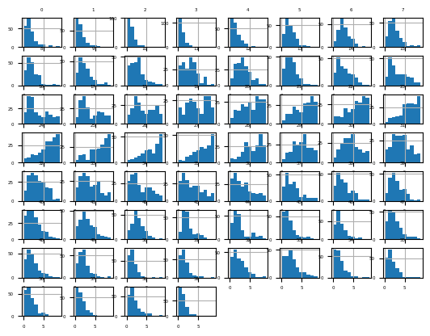
Next, let’s evaluate the same KNN model as the previous section
df = read_csv(data_path + 'sonar.csv', header=None)data = df.valuesX, y = data[:, :-1], data[:, -1]X = X.astype('float32')
y = LabelEncoder().fit_transform(y.astype('str'))trans = KBinsDiscretizer(n_bins=10, encode='ordinal', strategy='uniform')model = KNeighborsClassifier()pipeline = Pipeline(steps = [('t', trans), ('m', model)])cv = RepeatedStratifiedKFold(n_splits=10, n_repeats=3, random_state=1)n_scores = cross_val_score(pipeline, X, y, scoring='accuracy', cv=cv)print(f'Accuracy: {mean(n_scores):.3f}, {std(n_scores):.3f}')Accuracy: 0.829, 0.079k-Means Discretization Transform
df = read_csv(data_path + 'sonar.csv', header=None)data = df.values[:, :-1]trans = KBinsDiscretizer(n_bins=3, encode='ordinal', strategy='kmeans')data = trans.fit_transform(data)df = DataFrame(data)fig = df.hist(xlabelsize=4, ylabelsize=4)
[x.title.set_size(4) for x in fig.ravel()]
pyplot.show()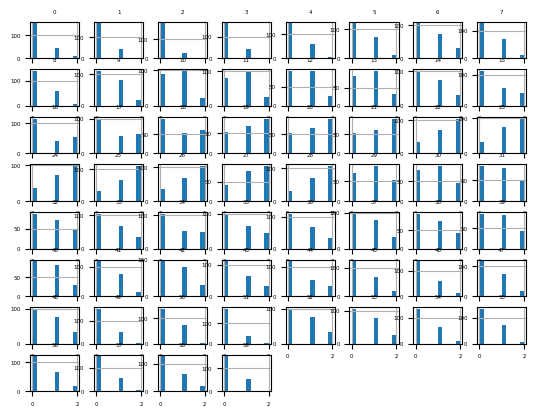
Next, let’s evaluate the same KNN model
df = read_csv(data_path + 'sonar.csv', header=None)data = df.valuesX, y = data[:, :-1], data[:, -1]X = X.astype('float32')
y = LabelEncoder().fit_transform(y.astype('str'))trans = KBinsDiscretizer(n_bins=3, encode='ordinal', strategy='kmeans')model = KNeighborsClassifier()pipeline = Pipeline(steps=[('t', trans), ('m', model)])cv = RepeatedStratifiedKFold(n_splits=10, n_repeats=3, random_state=1)n_scores = cross_val_score(pipeline, X, y, scoring='accuracy', cv=cv)print(f'Accuracy: {mean(n_scores):.3f}, {std(n_scores):.3f}')Accuracy: 0.814, 0.084Quantile Discretization Transform
df = read_csv(data_path + 'sonar.csv', header=None)data = df.values[:, :-1]trans = KBinsDiscretizer(n_bins=10, encode='ordinal', strategy='quantile')data = trans.fit_transform(data)df = DataFrame(data)fig = df.hist(xlabelsize=4, ylabelsize=4)
[x.title.set_size(4) for x in fig.ravel()]
pyplot.show()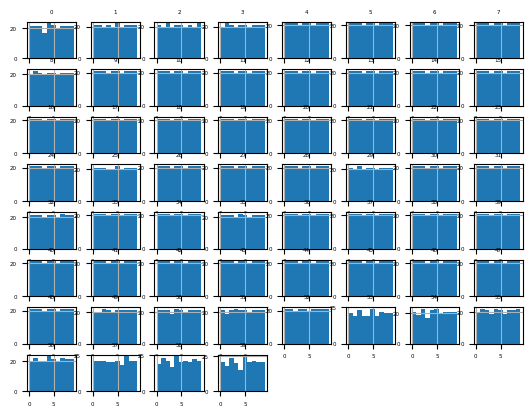
Next, let’s evaluate the same KNN model
df = read_csv(data_path + 'sonar.csv', header=None)data = df.valuesX, y = data[:, :-1], data[:, -1]X = X.astype('float32')
y = LabelEncoder().fit_transform(y.astype('str'))trans = KBinsDiscretizer(n_bins=10, encode='ordinal', strategy='quantile')model = KNeighborsClassifier()pipeline = Pipeline(steps=[('t', trans), ('m', model)])cv = RepeatedStratifiedKFold(n_splits=10, n_repeats=3, random_state=1)n_scores = cross_val_score(pipeline, X, y, scoring='accuracy', cv=cv)print(f'Accuracy: {mean(n_scores):.3f} {std(n_scores): .3f}')Accuracy: 0.840 0.072We chose the number of bins as an arbitrary number; in this case, 10. This hyperparameter can be tuned to explore the effect of the resolution of the transform on the resulting skill of the model.
def get_dataset(filename):
df = read_csv(filename, header=None)
data = df.values
X, y = data[:, :-1], data[:, -1]
X = X.astype('float32')
y = LabelEncoder().fit_transform(y.astype('str'))
return X, ydef get_models():
models = dict()
for i in range(2, 11):
trans = KBinsDiscretizer(n_bins=i, encode='ordinal', strategy='quantile')
model = KNeighborsClassifier()
models[str(i)] = Pipeline(steps=[('t', trans), ('m', model)])
return modelsdef evaluate_model(model, X, y):
cv = RepeatedStratifiedKFold(n_splits=10, n_repeats=3, random_state=1)
scores = cross_val_score(model, X, y, scoring='accuracy', cv=cv)
return scoresX, y = get_dataset()models = get_models()results, names = list(), list()for name, model in models.items():
scores = evaluate_model(model, X, y)
results.append(scores)
names.append(name)
print(f'{name}: {mean(scores): .3f} {mean(scores): .3f}')2: 0.822 0.822
3: 0.870 0.870
4: 0.838 0.838
5: 0.838 0.838
6: 0.844 0.844
7: 0.852 0.852
8: 0.838 0.838
9: 0.841 0.841
10: 0.840 0.840pyplot.boxplot(results, labels=names, showmeans=True)
pyplot.show()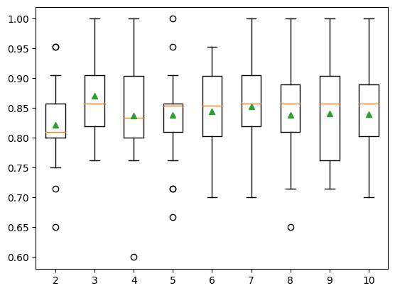
Derive New Input Variables
Polynomial Feature Transform
from numpy import asarray
from sklearn.preprocessing import PolynomialFeaturesdata = asarray([[2,3], [2,3], [2,3]])
print(data)[[2 3]
[2 3]
[2 3]]trans = PolynomialFeatures(degree=2)data = trans.fit_transform(data)print(data)[[1. 2. 3. 4. 6. 9.]
[1. 2. 3. 4. 6. 9.]
[1. 2. 3. 4. 6. 9.]]Polynomial Feature Transform Example
df = read_csv(data_path + 'sonar.csv', header=None)data = df.values[:, :-1]trans = PolynomialFeatures(degree=3)data = trans.fit_transform(data)df = DataFrame(data)print(df.shape)(208, 39711)Next, let’s evaluate the same KNN model
df = read_csv(data_path + 'sonar.csv', header=None)data = df.valuesX, y = data[:, :-1], data[:, -1]X = X.astype('float32')y = LabelEncoder().fit_transform(y.astype('str'))trans = PolynomialFeatures(degree=3)model = KNeighborsClassifier()pipeline = Pipeline(steps=[('t', trans), ('m', model)])cv = RepeatedStratifiedKFold(n_splits=10, n_repeats=3, random_state=1)n_scores = cross_val_score(pipeline, X, y, scoring='accuracy', cv=cv)print(f'Accuracy: {mean(n_scores):.3f} {std(n_scores): .3f}')Accuracy: 0.800 0.077Effect of Polynomial Degree
X, y = get_dataset(data_path + 'sonar.csv')num_feature = list()degrees = [i for i in range(1, 6)]for d in degrees:
trans = PolynomialFeatures(degree=d)
data = trans.fit_transform(X)
num_feature.append(data.shape[1])
print(f'Degree: {d}, Features: {data.shape[1]}')Degree: 1, Features: 61
Degree: 2, Features: 1891
Degree: 3, Features: 39711
Degree: 4, Features: 635376
Degree: 5, Features: 8259888pyplot.plot(degrees, num_feature)
pyplot.show()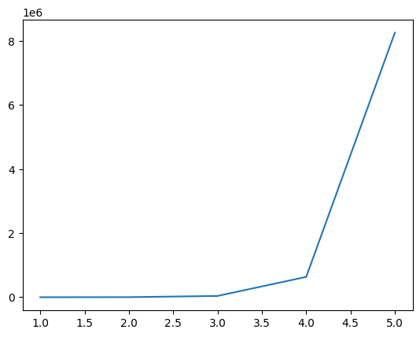
It may be a good idea to treat the degree for the polynomial features transform as a hyperparameter and test different values for your dataset.
def get_models():
models = dict()
for d in range(1,5):
trans = PolynomialFeatures(degree=d)
model = KNeighborsClassifier()
models[str(d)] = Pipeline(steps=[('t', trans), ('m', model)])
return modelsX, y = get_dataset(data_path + 'sonar.csv')models = get_models()results, names = list(), list()for name, model in models.items():
scores = evaluate_model(model, X, y)
results.append(scores)
names.append(name)
print(f'{name}: {mean(scores):.3f} {std(scores):.3f}')1: 0.797 0.073
2: 0.793 0.085
3: 0.800 0.077
4: 0.795 0.079pyplot.boxplot(results, labels=names, showmeans=True)
pyplot.show()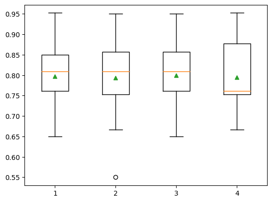
Advanced Transforms
Transform Both Numerical and Categorical Data
Data Preparation for the Abalone Regression Dataset
from numpy import absolute
from sklearn.preprocessing import OneHotEncoder, MinMaxScaler
from sklearn.compose import ColumnTransformer
from sklearn.svm import SVR
from sklearn.model_selection import KFolddf = read_csv(data_path + 'abalone.csv', header=None)last_ix = len(df.columns) - 1X, y = df.drop(last_ix, axis=1), df[last_ix]print(X.shape, y.shape)(4177, 8) (4177,)numerical_ix = X.select_dtypes(include=['int64', 'float64']).columns
categorical_ix = X.select_dtypes(include=['object', 'bool']).columnst = [('cat', OneHotEncoder(), categorical_ix), ('num', MinMaxScaler(), numerical_ix)]col_transform = ColumnTransformer(transformers=t)model = SVR(kernel='rbf', gamma = 'scale', C=100)pipeline = Pipeline(steps=[('prep', col_transform), ('m', model)])cv = KFold(n_splits=10, shuffle=True, random_state=1)scores = cross_val_score(pipeline, X, y, scoring='neg_mean_absolute_error', cv=cv)scores = absolute(scores)print(f'MAE: {mean(scores):.3f} {std(scores): .3f}')MAE: 1.465 0.047Transform the Target in Regression
Example of Using the TransformedTargetRegressor
from numpy import loadtxt
from sklearn.linear_model import HuberRegressor
from sklearn.compose import TransformedTargetRegressor
from sklearn.model_selection import RepeatedKFolddata = loadtxt(data_path + 'boston-housing.csv')X, y = data[:, :-1], data[:, -1]pipeline = Pipeline(steps=[('normalize', MinMaxScaler()), ('model', HuberRegressor())])model = TransformedTargetRegressor(regressor=pipeline, transformer=MinMaxScaler())cv = RepeatedKFold(n_splits=10, n_repeats=3, random_state=1)scores = cross_val_score(model, X, y, scoring='neg_mean_absolute_error', cv=cv)scores=absolute(scores)print(f'Mean: {mean(scores):.3f}')Mean: 3.203We are not restricted to using scaling objects; for example, we can also explore using other data transforms on the target variable, such as the PowerTransformer
from sklearn.preprocessing import PowerTransformerdata = loadtxt(data_path + 'boston-housing.csv')X, y = data[:, :-1], data[:, -1]steps = list()steps.append(('scale', MinMaxScaler(feature_range=(1e-5, 1))))
steps.append(('power', PowerTransformer()))
steps.append(('model', HuberRegressor()))pipeline = Pipeline(steps=steps)model = TransformedTargetRegressor(regressor=pipeline, transformer=PowerTransformer())cv = RepeatedKFold(n_splits=10, n_repeats=3, random_state=1)scores = cross_val_score(model, X, y, scoring='neg_mean_absolute_error', cv=cv)scores = absolute(scores)print(f'Mean: {mean(scores): .3f}')Mean: 2.972How to Save and Load Data Transforms
Worked Example of Saving Data Preparatio
Define a Dataset
from sklearn.datasets import make_blobs
from sklearn.model_selection import train_test_splitX, y = make_blobs(n_samples=100, centers=2, n_features=2, random_state=1)X_train, X_test, y_train, y_test = train_test_split(X, y, test_size=0.33, random_state=1)for i in range(X_test.shape[1]):
print(f'{i} > train: min={X_train[:, i].min():.3f}, max={X_train[:,i].max(): .3f}, test: min={X_test[:,i].min():.3f}, max={X_test[:,i].max():.3f}')0 > train: min=-11.856, max= 0.526, test: min=-11.270, max=0.085
1 > train: min=-6.388, max= 6.507, test: min=-5.581, max=5.926Scale the Dataset
from sklearn.linear_model import LogisticRegression
from pickle import dumpX, y = make_blobs(n_samples=100, centers=2, n_features=2, random_state=1)X_train, X_test, y_train, y_test = train_test_split(X, y, test_size=0.33, random_state=1)scaler = MinMaxScaler()scaler.fit(X_train)MinMaxScaler()In a Jupyter environment, please rerun this cell to show the HTML representation or trust the notebook.
On GitHub, the HTML representation is unable to render, please try loading this page with nbviewer.org.
MinMaxScaler()
X_train_scaled = scaler.transform(X_train)X_test_scaled = scaler.transform(X_test)for i in range(X_test.shape[1]):
print(f'{i} > train: min={X_train_scaled[:, i].min():.3f}, max={X_train_scaled[:,i].max(): .3f}, test: min={X_test_scaled[:,i].min():.3f}, max={X_test_scaled[:,i].max():.3f}')0 > train: min=0.000, max= 1.000, test: min=0.047, max=0.964
1 > train: min=0.000, max= 1.000, test: min=0.063, max=0.955Save Model and Data Scaler
X, y = make_blobs(n_samples=100, centers=2, n_features=2, random_state=1)X_tarin, _, y_train, _ = train_test_split(X, y, test_size=0.33, random_state=1)scaler = MinMaxScaler()scaler.fit(X_tarin)MinMaxScaler()In a Jupyter environment, please rerun this cell to show the HTML representation or trust the notebook.
On GitHub, the HTML representation is unable to render, please try loading this page with nbviewer.org.
MinMaxScaler()
X_train_scaled = scaler.transform(X_train)model = LogisticRegression(solver='lbfgs')model.fit(X_train_scaled, y_train)LogisticRegression()In a Jupyter environment, please rerun this cell to show the HTML representation or trust the notebook.
On GitHub, the HTML representation is unable to render, please try loading this page with nbviewer.org.
LogisticRegression()
dump(model, open('model.pkl', 'wb'))dump(scaler, open('scaler.pkl', 'wb'))Load Model and Data Scaler
from pickle import loadX, y = make_blobs(n_samples=100, centers=2, n_features=2, random_state=1)_, X_test, _, y_test = train_test_split(X, y, test_size=0.33, random_state=1)scaler = load(open('model.pkl'))